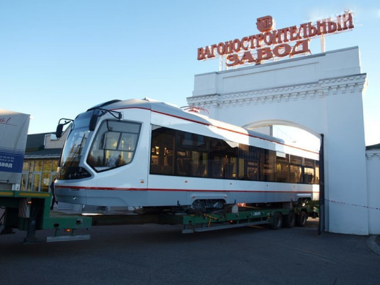
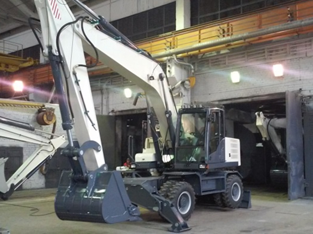
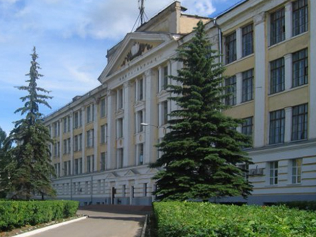
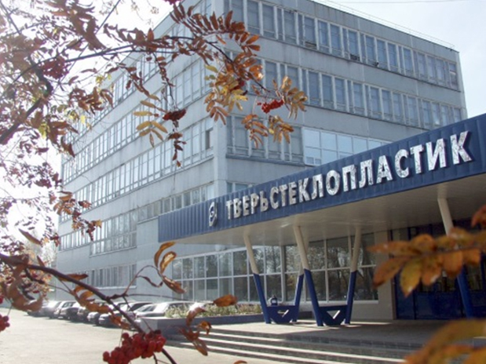
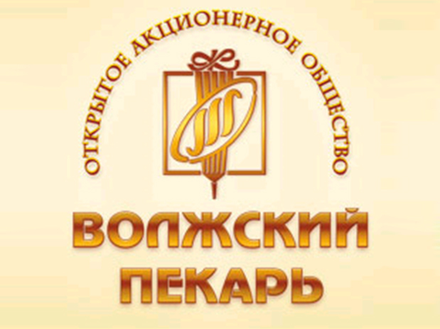

Тверь
Промышленность Твери
В городе развиты следующие отрасли промышленности: машиностроение, полиграфия, химическая, лёгкая и пищевая промышленность.
Основные крупные предприятия
- «Тверской вагоностроительный завод» - крупное предприятие России по производству различных типов магистральных пассажирских вагонов;
- «Тверской экскаватор» - производитель экскаваторов на пневмоколесном, гусеничном ходу на базе а/м типа «Урал», «КамАЗ»;
- «Тверской полиграфический комбинат» - является одним из крупнейших в стране, уверенно входит в первую десятку ведущих полиграфических предприятий по выпуску книжной продукции в России. В среднем за месяц на комбинате печатается два миллиона книг в твердом переплете, полмиллиона брошюр на скрепке, миллион брошюр бесшвейного скрепления;
- «Тверской полиэфир» - единственное предприятие в России, выпускающие полиэфирные нити и полиэфирные обивочные ткани для автомобильной и мебельной промышленности;
- «Тверьстеклопластик»- производитель изделий из стекловолокна и стеклопластика;
- Хлебокомбинат «Волжский пекарь» Визитной карточкой стали сдобные баранки и хрустящие сушки, нежнейшие вафли и овсяное печенье. Продукция под этим брендом продается в 49 регионах России, 7 странах ближнего и дальнего зарубежья и в США. ОАО «Волжский пекарь» с успехом представляет хлебопекарную и кондитерсккую продукцию на престижных форумах в России, Германии, Болгарии, Белоруссии, на Кипре.





